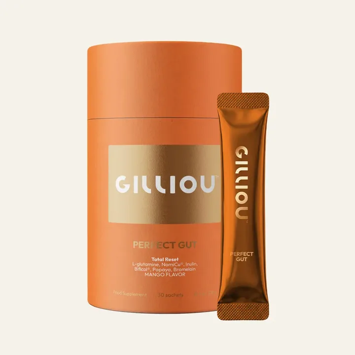
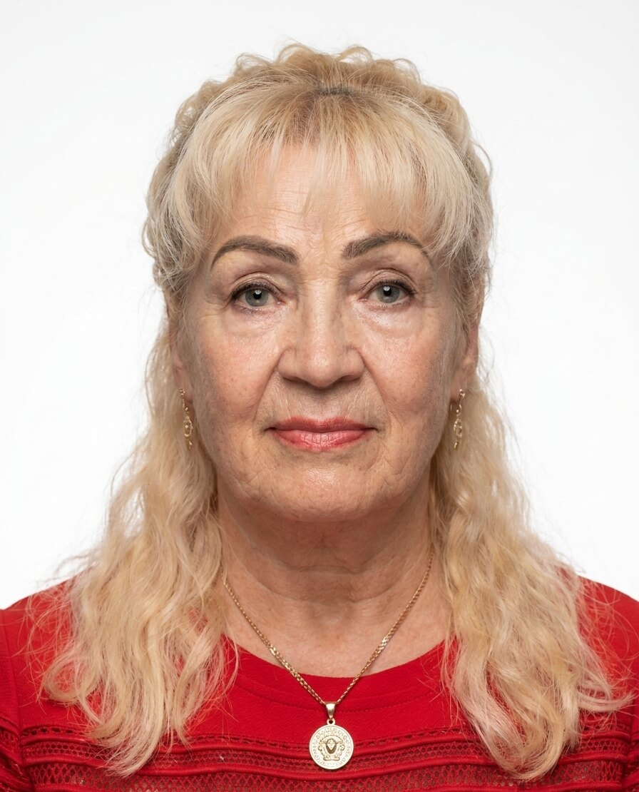
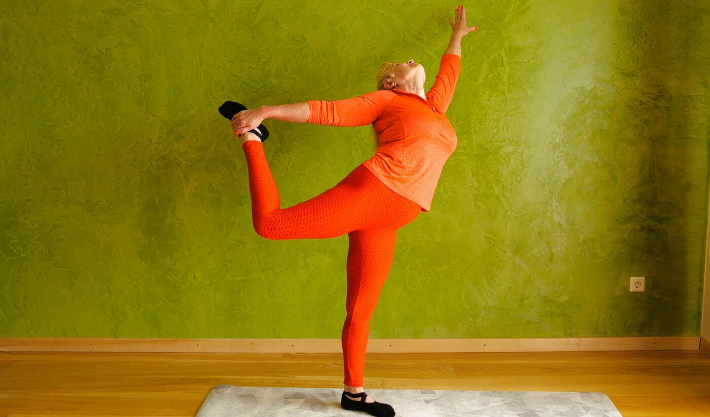
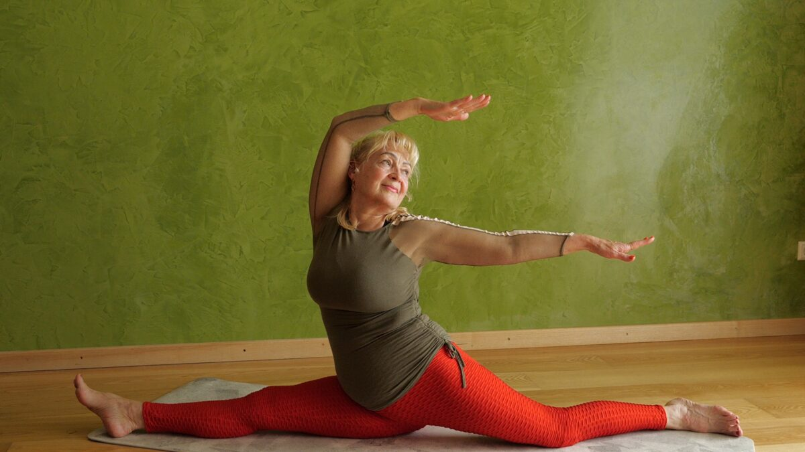
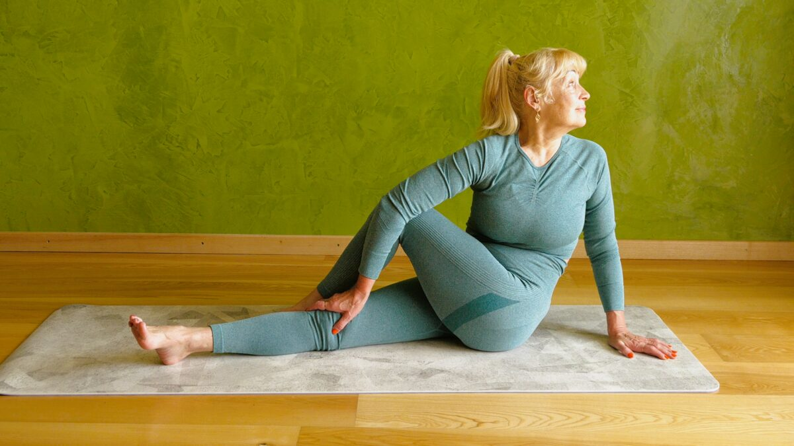
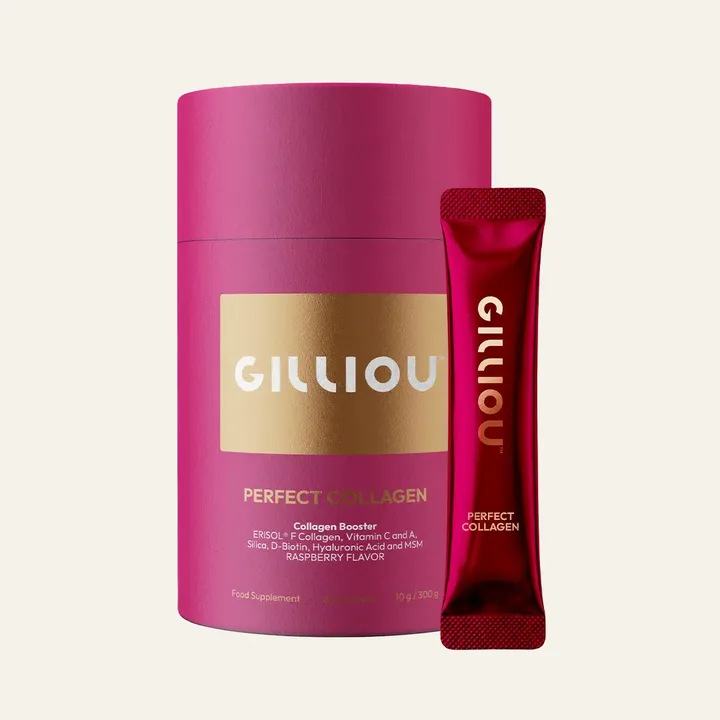
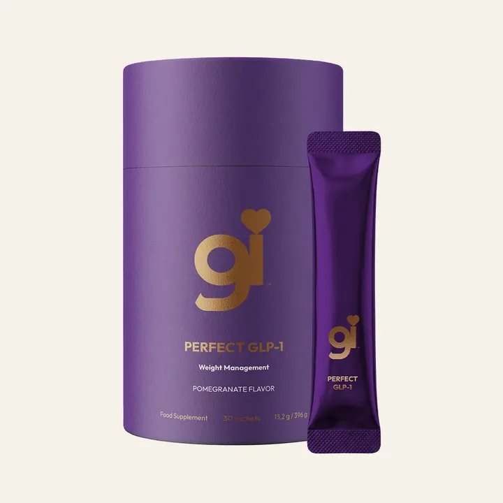

Perfect Gut
Skaidulos, probiotikai, prebiotikai, fermentai ir augalų ekstraktai viename kasdieniame paketėlyje. Geriu ryte, prieš valgį.
Vartoju patiJoga, sveikesnė maisto gamyba ir ramybė. Taip, kad pradėti galėtų bet kuris žmogus.

Kūnas, mintys ir emocijos, siela. Žiūriu į visumą, ne į vieną dalį.
Jungiu mitybos žinias, jogą, meditaciją, kvėpavimą ir Ajurvedą. Kalbu taip, kad bet kuris žmogus, net be jokio išsilavinimo, galėtų pradėti tobulinti savo gyvenimo būdą.
Tai mano pačios pritaikyta sistema, išaugusi per 36 metus praktikos. Kelerius metus vedžiau jogos mokymus Londone ir Lietuvoje.
Joga man yra platesnio sveiko gyvenimo būdo dalis, ne vien fiziniai pratimai. Ruošiu trumpus, neįkyrius video su paaiškinimais, kam kiekvienas judesys reikalingas.



Valgyk sveikiau, gyvenk ilgiau.
Verdant daug vandens ir kaitinant stipriai, dalis naudos lieka puode, o ne lėkštėje.
Nereikia keisti, ką valgai. Užtenka keisti, kaip gamini. Aš gaminu žemoje temperatūroje, be vandens: daržovės ruošiasi savoje drėgmėje.
Aš netikiu gražiais pažadais. Pirma skaitau sudėtį, tada bandau pati. Rekomenduoju tik tai, į ką nebūtų gėda žiūrėti žmogui į akis. Taip atsirado mano Gilliou.

Skaidulos, probiotikai, prebiotikai, fermentai ir augalų ekstraktai viename kasdieniame paketėlyje. Geriu ryte, prieš valgį.
Vartoju pati
Kolageno peptidai ir vitaminas C, kuris prisideda prie normalaus kolageno susidarymo odai.
Vartoju pati
Pasirinkau dėl sudėties: obuolių ir juodųjų serbentų skaidulos, gliukomananas ir chromas. Tai maisto papildas, ne vaistas.
Dar nebandžiauIlgus metus po valgio jaučiau didžiulį diskomfortą. Šiandien jaučiu lengvumą. Perfect Gut išbandžiau pirmiausia ant savęs.
Tai mano patirtis, ne pažadas tau.
Nemokama keturių puslapių dovana: maži kasdieniai įpročiai rytui, dienai ir vakarui. Atsidaro iš karto, nieko registruoti nereikia.
Dalinuosi tuo, ką išbandžiau pati. Be pardavinėjimo ir be spaudimo. Tik patirtis ir nuoroda tiems, kuriuos sudomino.
Gilliou veikia tinklinio marketingo principu. Tai reiškia du pajamų šaltinius, ne vieną.
Žmogus perka pagal tavo nuorodą. Nuo jo pirkimų gauni dalį.
Tavo pakviesti žmonės rekomenduoja patys. Nuo jų pardavimų taip pat gauni dalį.
Pradedama nuo to, ką išbandei ir kuo pasitiki.
Papasakoji, kaip yra tau. Nepardavinėji ir nespaudi.
Tik tiems, kurie patys paklausia. Kitiems nieko nesiūloma.
Jei tik rekomenduoji, ne. Jei kuri komandą, taip: moki mėnesinę Lab X prenumeratą (tai mokymų platforma) ir kas mėnesį perki produktų bent už 80 taškų. Tai produktai, kuriuos vartoji.
Ne. Užtenka papasakoti savo patirtį ir duoti nuorodą tiems, kurie paklausia. Įkyrumas prasideda nuo spaudimo. Jei tik dalijiesi ir nesiūlai kasdien, santykiai lieka.
Tempą renkiesi tu. Rekomenduoti tai, ką jau vartoji, užima tiek laiko, kiek nori skirti.
Taip. Būti tik pirkėju prenumeratos nereikia. Per tą pačią nuorodą galima ir pirkti, ir vėliau rekomenduoti.
Verta žinoti iš anksto: atidarytų papildų Gilliou atgal nepriima. Grąžinti galima tik neatidarytus, per 14 dienų. Todėl pradėti verta nuo vieno produkto.
Piramidėje pinigai daugiausia ateina iš to, kad nauji nariai moka už prisijungimą. Čia atlygis skaičiuojamas nuo tikrų produktų pirkimų. Rekomenduoti galima be jokio mokesčio.
Sąžiningai: niekas negali pažadėti. Taip rašo ir pats bendrovės atlygio planas. Principas paprastas: gauni dalį nuo pirkimų, kuriuos atneša tavo rekomendacija.
Per šią nuorodą galima ir pirkti, ir registruotis partneriu. Sprendimas visada lieka tau.
Gilliou per mano nuorodągilliou.com/affiliate-program?a=c6b51361